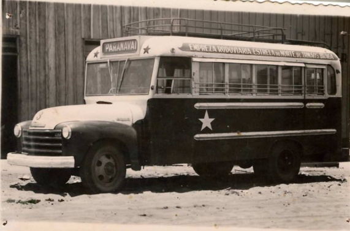
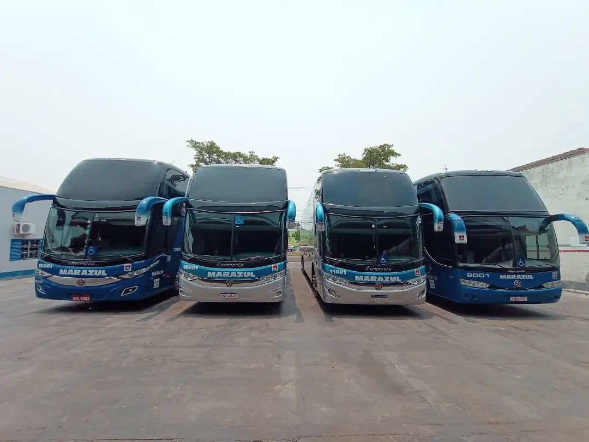
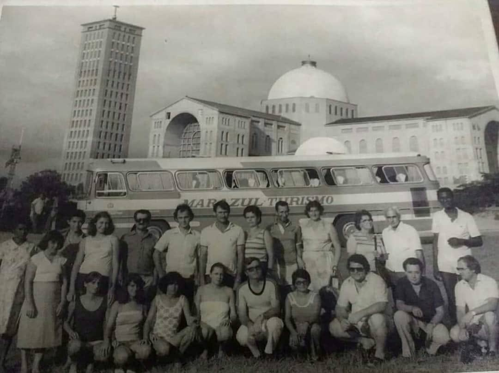
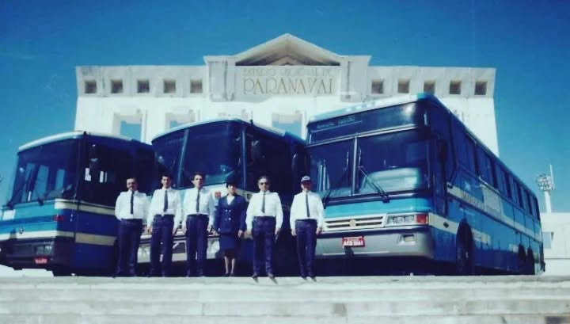
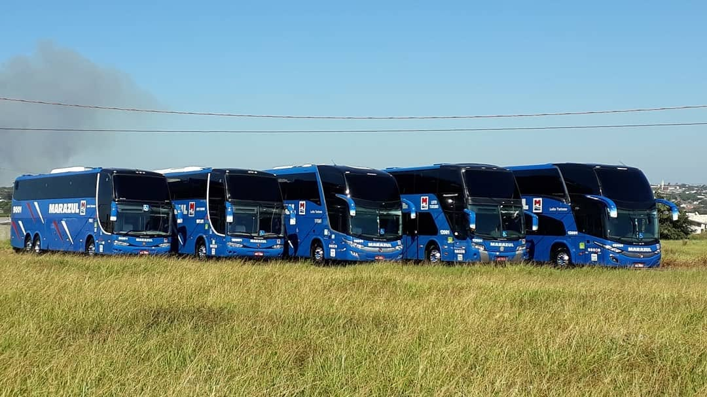
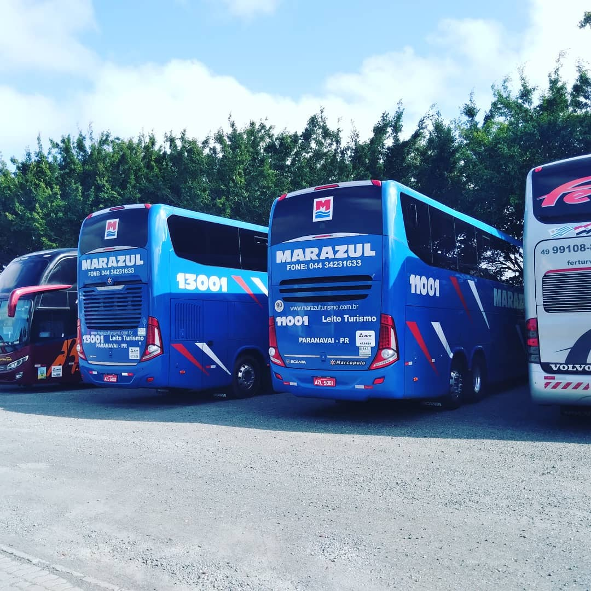

1956
Primeiro Ônibus
A Empresa
Desde a nossa fundação a Marazul construiu sua trajetória com dedicação, segurança e compromisso com cada passageiro. Ao longo dos anos, expandimos rotas, renovamos nossa frota e fortalecemos os laços com as comunidades que atendemos — sempre guiados pelo mesmo propósito: conectar pessoas.


Primeiro Ônibus

Viagem Aparecida do Norte

Exposição da frota

Expansão da frota

Viagem ao beto carreiro
Novos Portos
Tecnologia
Missão
Transportar pessoas com alegria, segurança e compromisso inabalável com a qualidade. Mais do que deslocamentos, criamos conexões e experiências inesquecíveis.
Visão
Ser referência no transporte regional, investindo em inovação, qualificação da equipe e renovação contínua da frota para oferecer a melhor experiência.
Valores